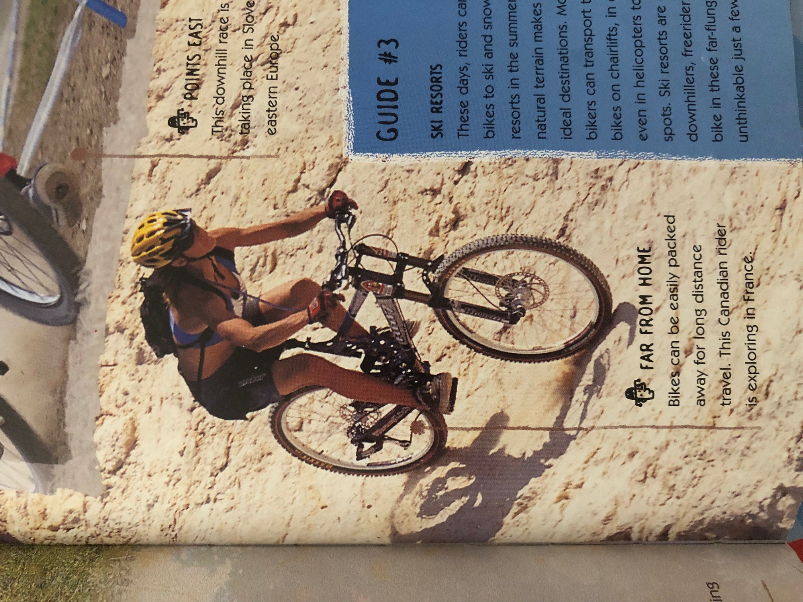
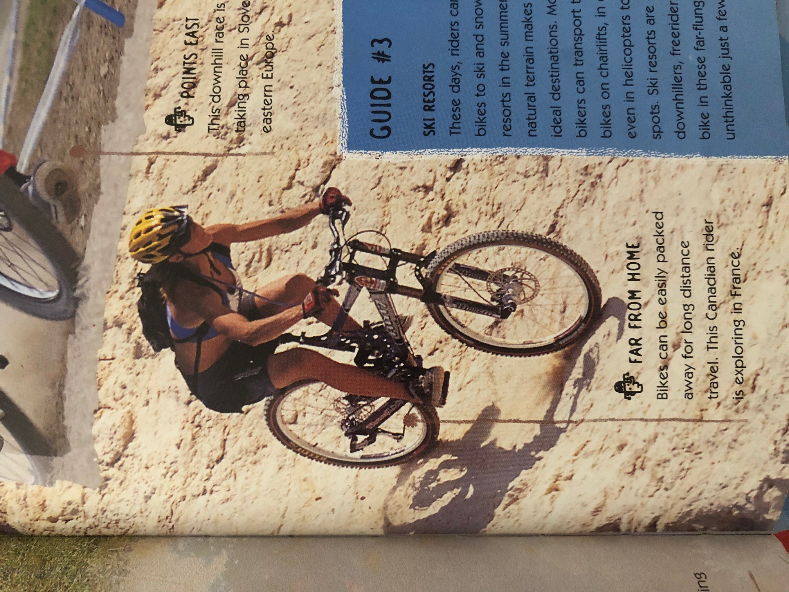

A mountain bike or mountain bicycle is a bicycle designed for off-road cycling. Mountain bikes share some similarities with other bicycles, but incorporate features designed to enhance durability and performance in rough terrain, which often makes them heavier, more complex and less efficient on smooth surfaces.
Fancy the look of the mountain trails at Fort William or Glentress? Want to follow in the footsteps of Jenny Copnall, Liam Killeen, Oli Beckingsale and Annie Last? What you need is one of our exciting Mountain Bikes with extra strong suspension forks, Shimano Alivio shifters and derailleurs with Tektro hydraulic disc brakes and all for less than £600!
 
